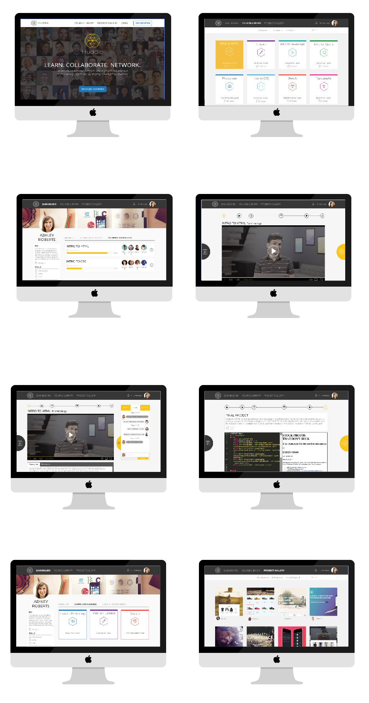

DESIGNATION
Huddle is a conceptual online learning platform that facilitates the desire for social interaction when learning outside of a traditional classroom. I was the UX designer in a team that consisted of one other UX designer and two UI designers.
Online learning is a growing industry due to the increase of skills required for jobs from changing technology and because of the increase in internet accessibility. Huddle was an exploratory project that was created in order to solve needs and frustrations people encountered when trying to learn online and improve the overall experience of online learning.
The first task our team did was gather data about the online learning industry. I did a competitive analysis and SWOT diagrams on other online learning platforms in order to understand what the market was and what opportunities we had for introducing a new platform. I discovered that there were few platforms that had a natively supported community and that most platforms had a fee to use.
After researching the domain of the project, I decided to interview online learning users about their frustrations and needs they experienced when learning online. I also utilized surveys to gather large amounts of quantitative data that we could use in addition to the qualitative information collected from the user interviews.
After we had collected all of this data from research, we had to then make sense of it and transform the information into meaningful opportunities. Based off of the key data from our interviews and surveys, I embodied the findings into two user personas. These personas would be used to represent our demographic and remind us of the needs of our users. One person was the Social Learner who is looking to advance her career and she's most comfortable learning by asking others for help. The other is the Job Seeker who is looking to start a career and is independent while learning.


I also created a journey map for our users in order to understand their thoughts and feelings when going through an online learning experience. This gave us a clear view on how to improve certain areas of online learning and what a typical experience by our persona would look like. One of the points this showed us was that, our persona, Ashley, had trouble staying motivated on previous learning platforms because there was no deadline and she felt alone and was not a pleasant experience because she is extroverted and strives when around other people. Introducing a group feature on Huddle, allowed for Ashley to feel like she was not going learning alone and giving her a schedule would prevent her from procrastinating. In addition, knowing that her work would be viewed by her peers would give her extra motivation to perform well. However, because Ashley also works, we had to make sure that the class schedule could accommodate that too. Therefore we decided to create the course to fit over a week time frame, but allowed the material to be learned at any time within that week.

One of our key findings was that when users had a question or got stuck they became unmotivated because they were used to having a peer or teacher in the vicinity to answer the question immediately when in a traditional classroom setting. I also discovered that forums were very popular and were enjoyed by most of the users we interviewed because they were not only one way to find answers to problems they had, but also because they felt comfort in knowing that other users were in the same situatiton as them. I incorporated these findings into design principles that we would follow when creating the wireframes.
1. Facilitate a collaborative learning enviornment without impeding on independent learning.
2. Appear welcoming and accessable to learners from all levels of expertise.
3. Encourage interaction between teammates and other site members to develop a community.
From there I developed initial hand sketched wireframes that we used to user test our concept. My main goal was to implement a way to feel a sense of community. One of the challenges we faced was trying to create a system where users would be in a group and learning the same material, but without sacrificing the time flexibility that online learning excels at. Our solution was to place users in small groups that would start at a selected date, but the users could complete the material at the course at their own pace within the timeframe. I also designed the huddle button interaction that allowed users to have a central focus for all the group interactions and remind them that they were not alone when going through the course. In addition, this feature could become an enjoyable microinteraction and a brand identity.
One of the major changes we decided to make from the original wireframes after testing was to remove the option of a calendar to pick a start date. Even though it seemed like a good idea because it would allow for more flexible class times, the option to choose any date was overwhelming to the user. Instead we decided to have the user choose from already picked start dates. This allowed for an easier proccess because it minimized the number of choises the user had to make. With the changes decided from the usability testing feedback, I created a new wireframe in Axure that we used to continue to test and reiterate on.
Working on Huddle tested my ability to work quickly and efficiently, completing the entire product in 3 weeks, doing multiple design sprints to get there. I learned that it is better to start out with less and slowly introduce more features upon results from usability testing. I am happy that we were able to introduce a new form of online learning that is current with the age of social media. The platform not only fits the current generation of users, but also solves the problem of isolation that most online learning platforms have. Having access to friends and others on the site allows for a community to be built and makes learning more engaging and motivational. Below are some of the hi-fidelity mockups done by the UI on my team based off of my wireframes and UX work.
